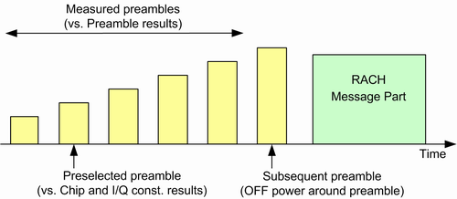

Defining the Scope of the Measurement
The WCDMA PRACH measurement analyzes up to five preambles of a random access preamble cycle, starting with the first preamble of the cycle. Also it measures the transmit OFF power.
Depending on the type of measurement result, there are three different measurement scopes, listed and illustrated below:
- Most results are available per preamble, for the first N preambles of the preamble cycle.
The maximum value of N equals 5. So the results can be provided for up to 5 preambles, labeled ""Measured preambles" in the figure.
N is configured via parameter "No of Measured Preambles" - For one preselected preamble, the "... vs. Chip" diagrams and an I/Q constellation diagram provide more detailed results.
This preamble can be freely selected within the range of measured preambles. It must be selected before the measurement is started.
The preselected preamble is configured via parameter "Preselected Preamble". - The transmit OFF power is measured before and after the preamble following the "Measured preambles". This preamble is labeled "Subsequent preamble" in the figure. Only the power before and after the preamble is measured. The preamble itself is not evaluated.

Measured preambles, preselected preamble and OFF power preamble